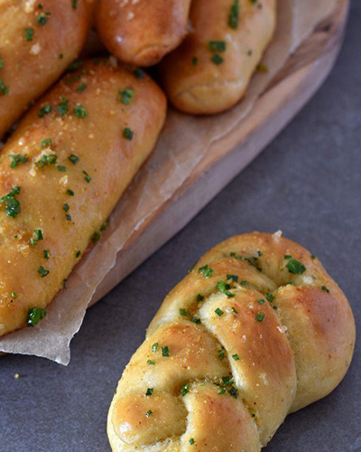

לחמניות שום רכות
רכיבים
- 500 גרם קמח לבן
- כף שמרים יבשים
- 3 כפות סוכר
- 1 1\4 כוס מים
- 30 גרם שמן זית
- כף מלח
- 8-10 שיני שום קלופות
- חצי כוס שמן זית
- כמה עלי טימין או רוזמרין
לקונפי שום
שלבי ההכנה

- מכינים קונפי שום: בסיר קטן שמים שמן זית, שיני שום ורוזמרין או טימין ומבשלים על אש קטנה (אבל הכי קטנה) עד שהשום מתרכך לגמרי אבל לא מזהיב מטיגון, זה לא אמור להיות טיגון אלא בישול על אש קטנטנה. מצננים לטמפרטורת החדר.
- בקערת מיקסר עם וו לישה מניחים את כל מצרכי הבצק פרט למלח, מערבלים על מהירות איטית במשך 5 דקות. מוסיפים את המלח ואת שיני השום שהתקררו וממשיכים ללוש את הבצק עוד 5-7 דקות. זה בסדר אם הבצק יוצא דביק.
- מכסים במגבת ומתפיחים שעה בחוץ או למשך הלילה במקרר (עדיף להתפיח במקרר כי הבצק מעט דביק אבל אפשר לעבוד איתו גם אחרי התפחה בחוץ).
- מחלקים את הבצק ל-12 עד 16 חתיכות שוות במשקלן, תלוי באיזה גודל אתם רוצים את הלחמניות. משטחים כל כדור בצק על שיש משומן מעט ומגלגלים למעין רולדה. מרדדים את הרולדה לרצועה שמנמנה ומניחים על תבנית עם נייר אפייה. אם רוצים, אפשר ליצור רצועה דקה יותר (ואז עדיף לקמח את הבצק ולא לשמן) ואיתה להכין לחמניות קשר או לחמניות שמונה או לחמניות עגולות. מה שתרצו.
- מכסים את הלחמניות עם מגבת או ניילון ומניחים להן לתפוח במשך שעה ורבע (בחורף) או 40 דקות (בקיץ).
- מחממים תנור ל-180 מעלות.
- מברישים את הלחמניות בביצה מהולה במים ומפזרים מלח גס.
- אופים במשך 20 דקות או עד שהלחמניות זהובות.
- בינתיים מערבבים בקערה שמן זית/חמאה עם אבקת שום ועירית או פטרוזיליה קצוצים דק, מיד כשהלחמניות יוצאות מהתנור מברישים אותן בשמן המתובל ומאפשרים להן להתקרר לפני שזוללים